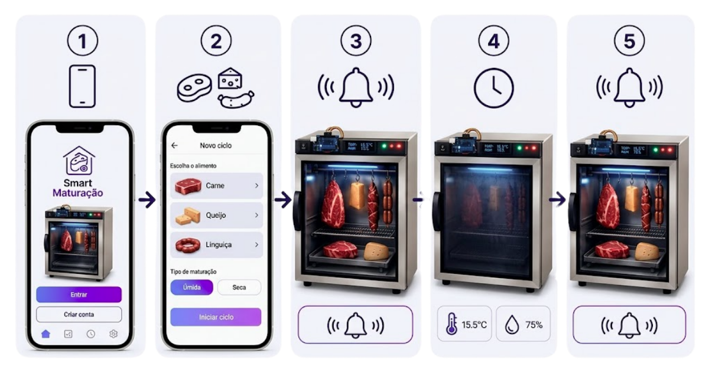
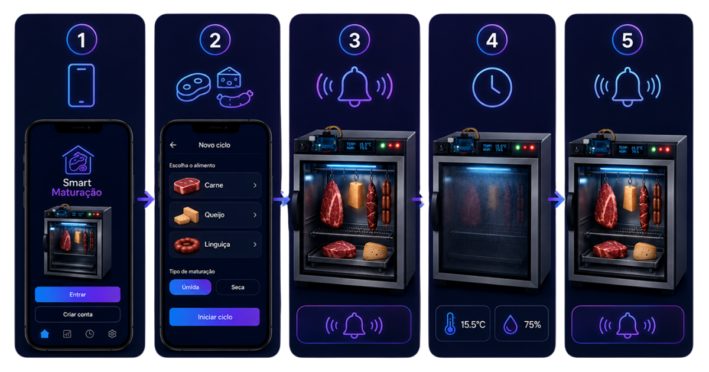

Guia de inicialização do MatureBox
Siga os passos técnicos precisos para configurar seu ambiente de maturação. Cada etapa é crucial para garantir a estabilidade do ecossistema IoT e a qualidade final do produto.


Antes de começar
Assista a este guia visual completo antes de iniciar o processo físico. O vídeo detalha a calibração inicial dos sensores e o pareamento com a rede.
-
Energização
Conecte o dispositivo a uma fonte de energia ininterrupta. Aguarde o ciclo de boot do sistema central. O LED indicador frontal piscará em azul elétrico durante a inicialização.
-
Conectividade IoT
Acesse o painel web local via IP padrão. Configure os parâmetros da sua rede Wi-Fi para permitir o envio contínuo de telemetria dos sensores para a nuvem.
-
Calibração térmica
Execute a rotina de autocalibração no aplicativo. O sistema estabilizará a temperatura interna e validará a precisão dos sensores antes do uso.
-
Inoculação e setup
Com o ambiente estabilizado, insira o produto alvo. Selecione o perfil de maturação correspondente no painel de controle. O sistema ajustará a umidade relativa e o fluxo de ar automaticamente com base no algoritmo preditivo.
> STATUS: AGUARDANDO PRODUTO> UMIDADE ALVO: 85%> TEMPERATURA: 2.5°C -
Monitoramento
O processo iniciou. Utilize a aba "Dashboard" para visualizar os gráficos em tempo real. Alertas serão emitidos caso haja desvio dos parâmetros ideais.